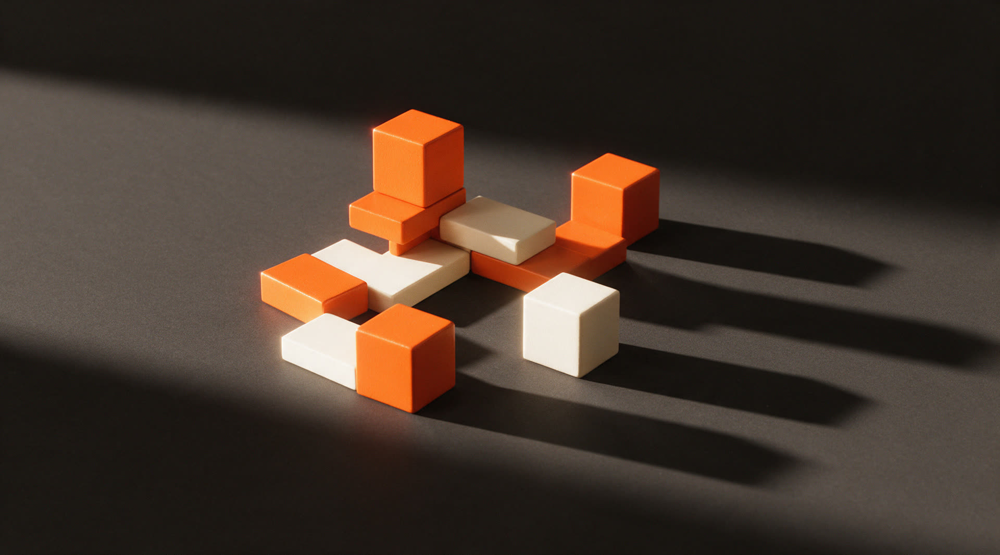

01
Taskuinha do Pirata
Taberna de petiscos. Menu e ecrãs em loop. 2026.
Fazemos-te o site à medida. Depois entregamos-te as chaves, e mudas o que quiseres sem ligar a ninguém.
Antes de falarmos de nós
Já tiveste de ligar a alguém só para mudar um preço no teu site?
E esperar. E explicar outra vez. E pagar por meia hora de trabalho de quinze segundos. Um site que só o autor consegue mexer não é um bem, é uma assinatura.
Abres o painel no telemóvel, escreves o preço novo, e está feito. Sem chamadas, sem orçamento, sem esperar por ninguém. É a diferença entre teres um site e teres acesso a um.
Feito
Taberna de petiscos. Menu e ecrãs em loop. 2026.

Stand automóvel. Catálogo e painel de gestão. 2026.

Restaurante. Site e reservas. 2025.

Serviços ao domicílio. Site e pedidos. 2025.

Marca e presença digital. 2025.
A base
Desenhamos cada ecrã à medida e construímo-lo para abrir num instante, em qualquer telemóvel. Sem temas comprados.
O comando que te entregamos. Textos, preços, fotos, tudo.
Para quem serve à mesa e muda a carta de semana a semana.
O que passa na montra e na parede, ligado ao mesmo painel.
A marca, e o que ela faz quando se mexe.
